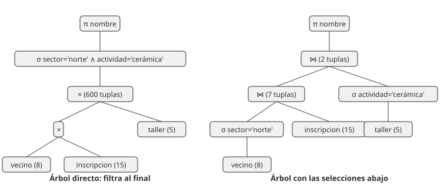

![Camilo Merino]()
Unidad 7 · Álgebra relacional
Qué vas a poder hacer. Escribir una pregunta en palabras como una expresión de álgebra relacional (seleccionar, proyectar, renombrar, unir, restar, intersectar, multiplicar, juntar y dividir relaciones), calcular a mano su resultado, reordenarla para que trabaje con menos tuplas y traducirla a una consulta SQL que dé exactamente las mismas filas.
Lo que necesitas antes. De las unidades 4 y 5: qué es una relación (una tabla con nombre, sus
atributos y sus tuplas), qué es una clave primaria y qué es una clave foránea. De SQL basta haber
visto un SELECT ... FROM ... WHERE (la unidad 9 lo desarrolla); aquí cada consulta se muestra
completa y con su resultado.
Tiempo. Unas 5 horas: 2 de lectura con sqlite3 abierto y 3 de práctica.
1. La idea: una consulta es una cuenta con tablas
En aritmética, \(3 + 4 \cdot 2\) toma números y devuelve un número. En álgebra relacional, una expresión toma relaciones y devuelve una relación. Esa propiedad (se llama cerradura) es la que permite encadenar operaciones: el resultado de una es la entrada de la siguiente, igual que en \((3 + 4) \cdot 2\).
¿Para qué sirve si al final se escribe SQL? Por tres razones:
- Es lo que el motor ejecuta. MySQL, SQLite o PostgreSQL traducen tu SQL a un árbol de operaciones de álgebra, lo reordenan para que sea barato y recién entonces lo corren.
- Obliga a pensar en conjuntos. Una pregunta como «los vecinos que van a todos los talleres del sábado» no tiene una palabra en SQL; en álgebra es una operación (la división, sección 6).
- Explica los errores. Casi todo resultado raro en SQL (filas repetidas, filas de más, una tabla vacía que no debería estarlo) tiene una explicación de una línea en álgebra.
Una relación es un conjunto. No tiene tuplas repetidas y sus tuplas no tienen orden. SQL, en
cambio, trabaja con multiconjuntos (bolsas): deja repetidos salvo que se pida DISTINCT. Esa es
la diferencia más importante entre las dos notaciones y vuelve en casi todos los ejercicios.
2. La base de esta unidad
Un centro comunitario de Chillán ofrece talleres a los vecinos del barrio. Guarda tres tablas
(sql/u07_talleres.sql las crea y las llena):
vecino
| id_vecino | nombre | sector | edad |
|---|---|---|---|
| 1 | Rosa Valdés | norte | 67 |
| 2 | Matías Fuentes | sur | 24 |
| 3 | Carmen Soto | norte | 58 |
| 4 | Diego Parra | centro | 35 |
| 5 | Javiera Lagos | sur | 41 |
| 6 | Luis Contreras | centro | 72 |
| 7 | Paula Rivas | norte | 29 |
| 8 | Héctor Muñoz | sur | 63 |
taller
| id_taller | actividad | dia | cupo |
|---|---|---|---|
| 1 | yoga | sábado | 12 |
| 2 | guitarra | martes | 10 |
| 3 | cerámica | sábado | 8 |
| 4 | computación | jueves | 15 |
| 5 | huerto | sábado | 20 |
inscripcion (clave primaria compuesta: un vecino se inscribe una vez en cada taller)
| id_vecino | id_taller |
|---|---|
| 1 | 1 |
| 1 | 3 |
| 1 | 5 |
| 2 | 2 |
| 2 | 4 |
| 3 | 3 |
| 3 | 5 |
| 4 | 4 |
| 5 | 1 |
| 5 | 2 |
| 5 | 3 |
| 5 | 5 |
| 6 | 5 |
| 7 | 1 |
| 7 | 2 |
Fíjate en dos detalles que importan más adelante: el atributo con el nombre del taller se llama
actividad y no nombre (sección 5), y el vecino 8 no tiene ninguna inscripción.
3. Selección, proyección y renombre
Son las tres operaciones unarias: trabajan sobre una sola relación.
Selección \(\sigma_{c}(R)\): deja las tuplas de \(R\) que cumplen la condición \(c\). Corta filas. La condición compara atributos con constantes o entre sí (\(=, \ne, <, \le, >, \ge\)) y se combina con \(\wedge\) (y), \(\vee\) (o) y \(\neg\) (no):
\[\sigma_{\mathrm{sector} = \text{'norte'} \,\wedge\, \mathrm{edad} \ge 60}(\mathrm{vecino})\]
devuelve solo a Rosa Valdés. El esquema (los atributos) no cambia; cambia cuántas tuplas hay.
Proyección \(\pi_{A_1, \dots, A_k}(R)\): deja solo esos atributos. Corta columnas. Como el
resultado es un conjunto, las tuplas que quedan iguales se funden en una: \(\pi_{\mathrm{sector}}(\mathrm{vecino})\)
tiene 3 tuplas (norte, sur, centro) aunque vecino tenga 8.
Renombre \(\rho\): cambia el nombre de la relación, \(\rho_{S}(R)\), o de un atributo, \(\rho_{\mathrm{nombre} \to \mathrm{tienda}}(R)\). No cambia ningún dato. Parece decorativo y no lo es: hace falta cada vez que dos relaciones tienen atributos con el mismo nombre y hay que multiplicarlas o juntarlas (secciones 5 y 11), y cuando una relación se junta consigo misma (ejercicio 7.6).
Por qué funciona componerlas. \(\sigma\) y \(\pi\) devuelven relaciones, así que
\(\pi_{\mathrm{nombre}}(\sigma_{\mathrm{edad} \ge 60}(\mathrm{vecino}))\) se lee de adentro hacia
afuera: primero se filtran filas, después se cortan columnas. El orden importa en un sentido: si
proyectas primero sobre nombre, la condición sobre edad ya no tiene con qué evaluarse.
4. Unión, diferencia e intersección
Son las operaciones de conjuntos de siempre, con una condición: \(R\) y \(S\) tienen que ser compatibles, es decir, tener el mismo número de atributos y que cada par de atributos hable de lo mismo (el mismo dominio). No se pueden unir vecinos con talleres.
| Operación | Notación | Qué deja |
|---|---|---|
| Unión | \(R \cup S\) | lo que está en \(R\), en \(S\) o en ambas |
| Diferencia | \(R - S\) | lo que está en \(R\) y no en \(S\) |
| Intersección | \(R \cap S\) | lo que está en las dos |
La intersección no es indispensable: \(R \cap S = R - (R - S)\). Se usa porque se lee mejor.
La diferencia es la manera de decir «no». «Los vecinos sin ninguna inscripción» es: todos los
vecinos menos los que aparecen en inscripcion,
\[\pi_{\mathrm{id\_vecino}}(\mathrm{vecino}) - \pi_{\mathrm{id\_vecino}}(\mathrm{inscripcion})\]
Las dos proyecciones son las que vuelven compatibles a las relaciones: ambas quedan con un solo
atributo, id_vecino.
5. Producto cartesiano y joins
Producto cartesiano \(R \times S\): cada tupla de \(R\) pegada a cada tupla de \(S\). Si \(R\) tiene \(m\) tuplas y \(S\) tiene \(n\), el producto tiene \(m \cdot n\). Sus atributos son los de \(R\) seguidos de los de \(S\), y por eso no puede haber dos con el mismo nombre: si los hay, se renombra antes con \(\rho\). Solo, el producto casi nunca responde una pregunta: combina a Rosa con inscripciones que no son suyas.
Join theta \(R \bowtie_{\theta} S = \sigma_{\theta}(R \times S)\): el producto seguido de una selección que se queda con las combinaciones que tienen sentido. Cuando la condición \(\theta\) es una igualdad entre la clave foránea y la clave primaria, se llama equijoin:
\[\mathrm{vecino} \bowtie_{\mathrm{vecino.id\_vecino} = \mathrm{inscripcion.id\_vecino}} \mathrm{inscripcion}\]
Join natural \(R \bowtie S\): un equijoin automático que iguala todos los atributos que tienen
el mismo nombre en las dos relaciones y deja una sola copia de cada uno. Con vecino e inscripcion
el único atributo común es id_vecino, y el resultado tiene una tupla por inscripción (15).
Cuándo el join natural se equivoca. Iguala por nombre, no por significado. Si taller hubiera
guardado la actividad en un atributo llamado nombre, el join natural de vecino, inscripcion y
taller exigiría además que el nombre del vecino fuera igual al nombre del taller, y el resultado
saldría vacío sin ningún mensaje de error. Por eso esta base llama actividad a ese atributo. La
base de Estampa Sur no tiene esa precaución, y la sección 14 muestra lo que pasa.
6. División: la operación del «todos»
\(R \div S\) responde preguntas del tipo «¿qué \(x\) están relacionados con todos los \(y\) de \(S\)?». Si \(R\) tiene los atributos \(X \cup Y\) y \(S\) tiene los atributos \(Y\), el cociente tiene los atributos \(X\) y contiene cada \(x\) tal que, para cada \(y\) de \(S\), el par \((x, y)\) está en \(R\).
No es una operación nueva: se escribe con las anteriores,
\[R \div S = \pi_{X}(R) - \pi_{X}\big((\pi_{X}(R) \times S) - R\big)\]
Por qué funciona. \(\pi_X(R) \times S\) son todos los pares que deberían existir si cada \(x\) estuviera relacionado con todos los \(y\). Al restarle \(R\) quedan los pares que faltan. Los \(x\) con algún par faltante son los que fallan; el cociente es el resto.
Cuándo no aplica. La división pide «todos», no «alguno». «Los vecinos inscritos en algún taller del sábado» es un join y una proyección; usar ahí la división deja fuera a casi todos. Y si \(S\) está vacía, la división devuelve todos los \(x\) de \(R\): es verdad que están relacionados con todos los elementos de un conjunto que no tiene ninguno (ejercicio 7.9).
7. Componer: árboles y equivalencias
Una expresión larga se escribe en pasos, con relaciones temporales y una flecha de asignación:
\[\mathrm{Norte} \leftarrow \sigma_{\mathrm{sector} = \text{'norte'}}(\mathrm{vecino}) \qquad \mathrm{Resultado} \leftarrow \pi_{\mathrm{nombre}}(\mathrm{Norte} \bowtie \mathrm{inscripcion})\]
O se dibuja como un árbol: las hojas son las tablas, cada nodo es una operación y el resultado sale por la raíz. Dos árboles distintos pueden dar la misma relación. Estas equivalencias son las que usa el motor para elegir el más barato:
- Bajar las selecciones. \(\sigma_{c}(R \bowtie S) = \sigma_{c}(R) \bowtie S\) si \(c\) usa solo atributos de \(R\). Filtrar antes deja menos tuplas para juntar.
- Partir una selección compuesta. \(\sigma_{c_1 \wedge c_2}(R) = \sigma_{c_1}(\sigma_{c_2}(R))\).
- El join es conmutativo y asociativo. \((R \bowtie S) \bowtie T = R \bowtie (S \bowtie T)\): se puede juntar en el orden que deje menos tuplas en el camino.
- Proyectar temprano, siempre que no se pierda un atributo que una operación posterior necesita.
El ejemplo resuelto compara dos árboles para la misma pregunta: uno pasa por una relación intermedia de 600 tuplas y el otro por una de 7. El resultado es el mismo; el trabajo, no.
8. De álgebra a SQL
| Álgebra | SQL | Ojo |
|---|---|---|
| \(\sigma_c(R)\) | SELECT * FROM R WHERE c |
en SQL la condición se escribe en el WHERE, no en el SELECT |
| \(\pi_{A,B}(R)\) | SELECT DISTINCT A, B FROM R |
sin DISTINCT, SQL deja las filas repetidas |
| \(\rho\) | AS (alias de tabla o de columna) |
FROM vecino v es \(\rho_v(\mathrm{vecino})\) |
| \(R \cup S\) | UNION |
UNION ALL deja repetidos |
| \(R - S\) | EXCEPT |
MySQL lo tiene desde la versión 8.0.31; antes se escribía con NOT EXISTS o NOT IN |
| \(R \cap S\) | INTERSECT |
también desde MySQL 8.0.31 |
| \(R \times S\) | FROM R, S o FROM R CROSS JOIN S |
es lo que pasa cuando olvidas la condición del join |
| \(R \bowtie_{\theta} S\) | FROM R JOIN S ON θ |
la forma recomendada |
| \(R \bowtie S\) | FROM R NATURAL JOIN S |
iguala todas las columnas de igual nombre |
| \(R \div S\) | dos NOT EXISTS anidados |
no hay palabra para la división (sección 10, paso 3) |
La división en SQL se escribe con una doble negación: «no existe un taller del sábado para el cual no exista la inscripción de este vecino». Es la misma idea de la fórmula de la sección 6: buscar el par que falta.
Lo que el álgebra básica no tiene. Sumas, conteos y promedios (SUM, COUNT, AVG con
GROUP BY) son una extensión del álgebra que se ve con SQL en la unidad 10; ordenar (ORDER BY)
tampoco es parte del álgebra, porque una relación no tiene orden. Y el álgebra clásica no tiene
NULL: el ejercicio 7.10 muestra dónde SQL y el álgebra dejan de coincidir por eso.
Diferencias entre SQLite y MySQL que tocan esta unidad. Las dos aceptan NATURAL JOIN, UNION,
EXCEPT e INTERSECT (MySQL desde 8.0.31). SQLite no acepta EXCEPT ALL ni INTERSECT ALL; MySQL
sí. Las consultas de esta unidad usan solo la forma sin ALL, que es la de conjuntos.
9. El álgebra en Python
Para comprobar cada resultado, el verificador de la unidad trae un evaluador de álgebra relacional de unas 45 líneas. Una relación es un objeto con los nombres de sus atributos y un conjunto de tuplas de Python; cada operación es una función corta. Leerlo es otra forma de entender las definiciones:
class Rel:
"""Una relación: nombres de atributos y un CONJUNTO de tuplas (sin duplicados ni orden)."""
def __init__(self, attrs, filas):
self.attrs = tuple(attrs)
self.filas = {tuple(f) for f in filas}
def sel(R, cond): # σ: las tuplas que cumplen la condición
return Rel(R.attrs, {f for f in R.filas if cond(dict(zip(R.attrs, f)))})
def proy(R, *atr): # π: solo esas columnas; el conjunto borra repetidos
i = [R.attrs.index(a) for a in atr]
return Rel(atr, {tuple(f[k] for k in i) for f in R.filas})
def ren(R, nuevos): # ρ: cambia nombres de atributos {viejo: nuevo}
return Rel([nuevos.get(a, a) for a in R.attrs], R.filas)
def compatibles(R, S):
if len(R.attrs) != len(S.attrs):
raise ValueError("no son compatibles: distinto número de atributos")
def union(R, S): compatibles(R, S); return Rel(R.attrs, R.filas | S.filas)
def dif(R, S): compatibles(R, S); return Rel(R.attrs, R.filas - S.filas)
def inter(R, S): compatibles(R, S); return Rel(R.attrs, R.filas & S.filas)
def prod(R, S): # ×: cada tupla de R con cada tupla de S
if set(R.attrs) & set(S.attrs):
raise ValueError("atributos repetidos: renombra con ρ antes del producto")
return Rel(R.attrs + S.attrs, {f + g for f in R.filas for g in S.filas})
def theta(R, S, cond): # ⋈θ = σθ(R × S)
return sel(prod(R, S), cond)
def natural(R, S): # ⋈: iguala TODOS los atributos de igual nombre
comun = [a for a in R.attrs if a in S.attrs]
resto = [a for a in S.attrs if a not in comun]
return Rel(R.attrs + tuple(resto),
{f + tuple(g[S.attrs.index(a)] for a in resto)
for f in R.filas for g in S.filas
if all(f[R.attrs.index(a)] == g[S.attrs.index(a)] for a in comun)})
def div(R, S): # ÷ = πX(R) − πX((πX(R) × S) − R)
X = [a for a in R.attrs if a not in S.attrs]
rx = proy(R, *X)
faltan = proy(dif(prod(rx, S), proy(R, *X, *S.attrs)), *X)
return dif(rx, faltan)
Tres cosas que el código deja a la vista: proy borra repetidos sin pedirlo, porque filas es un
set; prod se niega a seguir si hay atributos repetidos, que es la razón de ser de \(\rho\); y
natural iguala por nombre todo lo que encuentra en común. El verificador evalúa cada pregunta de la
unidad con estas funciones, corre la consulta SQL equivalente con sqlite3 y exige que las dos den
el mismo conjunto de filas.
10. Ejemplo resuelto · Tres preguntas al centro comunitario
La coordinadora del centro tiene tres preguntas para planificar el próximo mes:
- ¿Qué vecinos del sector norte están inscritos en cerámica? (Quiere armar un grupo para compartir transporte al taller.)
- ¿Quién no está inscrito en nada? (Va a llamarlo por teléfono.)
- ¿Quiénes van a todos los talleres del sábado? (Les va a ofrecer ser monitores.)
Paso 1 · Norte y cerámica: dos árboles para la misma pregunta
En palabras. Juntar vecinos con sus inscripciones y con los talleres; quedarse con los del norte y con cerámica; mostrar el nombre.
Árbol directo. Multiplicar todo y filtrar al final:
\[\pi_{\mathrm{nombre}}\Big(\sigma_{\mathrm{sector} = \text{'norte'} \,\wedge\, \mathrm{actividad} = \text{'cer}\acute{\text{a}}\text{mica'} \,\wedge\, \text{(igualdad de claves)}}\big(\mathrm{vecino} \times \mathrm{inscripcion} \times \mathrm{taller}\big)\Big)\]
El producto tiene \(8 \cdot 15 \cdot 5\) = 600 tuplas. Con el join natural en vez del producto, la relación intermedia baja a 15 tuplas (una por inscripción), pero todavía se juntan los 8 vecinos y los 5 talleres antes de filtrar.
Árbol con las selecciones abajo. Filtrar cada tabla antes de juntarla:
\[\mathrm{Norte} \leftarrow \sigma_{\mathrm{sector} = \text{'norte'}}(\mathrm{vecino}) \qquad \mathrm{Ceram} \leftarrow \sigma_{\mathrm{actividad} = \text{'cer}\acute{\text{a}}\text{mica'}}(\mathrm{taller})\]
\[\mathrm{Resultado} \leftarrow \pi_{\mathrm{nombre}}\big((\mathrm{Norte} \bowtie \mathrm{inscripcion}) \bowtie \mathrm{Ceram}\big)\]
Norte tiene 3 tuplas (Rosa, Carmen y Paula). Juntada con inscripcion da 7 tuplas:
| id_vecino | nombre | sector | edad | id_taller |
|---|---|---|---|---|
| 1 | Rosa Valdés | norte | 67 | 1 |
| 1 | Rosa Valdés | norte | 67 | 3 |
| 1 | Rosa Valdés | norte | 67 | 5 |
| 3 | Carmen Soto | norte | 58 | 3 |
| 3 | Carmen Soto | norte | 58 | 5 |
| 7 | Paula Rivas | norte | 29 | 1 |
| 7 | Paula Rivas | norte | 29 | 2 |
Ceram tiene una sola tupla (el taller 3). El join con ella deja 2 tuplas y la proyección, dos
nombres.

En SQL. El motor hace solo lo de bajar las selecciones; tú escribes la pregunta:
SELECT DISTINCT v.nombre
FROM vecino v
NATURAL JOIN inscripcion i
NATURAL JOIN taller t
WHERE v.sector = 'norte' AND t.actividad = 'cerámica';
| nombre |
|---|
| Rosa Valdés |
| Carmen Soto |
Paso 2 · Nadie inscrito: la diferencia
\[\mathrm{Sin} \leftarrow \pi_{\mathrm{id\_vecino}}(\mathrm{vecino}) - \pi_{\mathrm{id\_vecino}}(\mathrm{inscripcion}) \qquad \pi_{\mathrm{id\_vecino},\,\mathrm{nombre}}(\mathrm{Sin} \bowtie \mathrm{vecino})\]
La diferencia en SQL es EXCEPT, con las dos consultas compatibles (una columna cada una):
SELECT id_vecino FROM vecino
EXCEPT
SELECT id_vecino FROM inscripcion;
| id_vecino |
|---|
| 8 |
Para ver el nombre, se junta el resultado con vecino (aquí con IN, que la unidad 11 desarrolla):
SELECT v.id_vecino, v.nombre
FROM vecino v
WHERE v.id_vecino IN (SELECT id_vecino FROM vecino
EXCEPT
SELECT id_vecino FROM inscripcion);
| id_vecino | nombre |
|---|---|
| 8 | Héctor Muñoz |
Paso 3 · Todos los del sábado: la división
El divisor son los talleres del sábado: \(S \leftarrow \pi_{\mathrm{id\_taller}}(\sigma_{\mathrm{dia} = \text{'s}\acute{\text{a}}\text{bado'}}(\mathrm{taller}))\),
con los talleres 1, 3 y 5. El dividendo es inscripcion, con los atributos id_vecino e
id_taller. El cociente queda con id_vecino.
Paso a paso con la fórmula de la sección 6:
- \(\pi_{\mathrm{id\_vecino}}(\mathrm{inscripcion})\): los 7 vecinos con alguna inscripción (todos menos el 8).
- \(\pi_{\mathrm{id\_vecino}}(\mathrm{inscripcion}) \times S\): los 21 pares que existirían si cada uno fuera a los tres talleres del sábado.
- Restarle
inscripciondeja los 11 pares que faltan:
| id_vecino | id_taller |
|---|---|
| 2 | 1 |
| 2 | 3 |
| 2 | 5 |
| 3 | 1 |
| 4 | 1 |
| 4 | 3 |
| 4 | 5 |
| 6 | 1 |
| 6 | 3 |
| 7 | 3 |
| 7 | 5 |
- Los vecinos de esos pares (2, 3, 4, 6 y 7) son los que fallan. Quedan el 1 y el 5.
En SQL, la doble negación: no existe un taller del sábado al que este vecino no esté inscrito.
SELECT v.id_vecino, v.nombre
FROM vecino v
WHERE NOT EXISTS (
SELECT * FROM taller t
WHERE t.dia = 'sábado'
AND NOT EXISTS (
SELECT * FROM inscripcion i
WHERE i.id_vecino = v.id_vecino AND i.id_taller = t.id_taller));
| id_vecino | nombre |
|---|---|
| 1 | Rosa Valdés |
| 5 | Javiera Lagos |
Cómo se lee.
- Transporte compartido a cerámica: Rosa Valdés y Carmen Soto. Paula Rivas también es del norte, pero va a yoga y guitarra.
- Llamar a Héctor Muñoz, el único vecino registrado sin ningún taller. Una consulta de este tipo (todos menos los que aparecen) es la que encuentra clientes inactivos en cualquier negocio.
- Monitoras del sábado: Rosa Valdés y Javiera Lagos, las únicas que van a los tres. Carmen va a dos de tres (le falta yoga): la división no da puntos parciales.
- Lo que no cambió el resultado y sí el trabajo: el árbol con las selecciones abajo pasó por 7 tuplas intermedias en vez de 600. Con 8 vecinos da lo mismo; con 80.000 inscripciones es la diferencia entre una consulta instantánea y una que se cuelga.
11. Errores típicos
| Error | Cómo evitarlo |
|---|---|
Creer que SELECT columna es la proyección: SQL devuelve las filas repetidas |
si la pregunta es un conjunto («qué sectores hay»), escribe SELECT DISTINCT |
Join natural entre tablas que comparten un atributo por casualidad (nombre) |
antes de un NATURAL JOIN, lista los atributos comunes; si hay más de la clave, usa JOIN ... ON o renombra con \(\rho\) |
Olvidar la condición del join: FROM productor, ofrece WHERE precio > 1000 |
cada tabla nueva del FROM necesita su condición de unión; cuenta las filas y compáralas con la tabla más grande |
| Unir o restar relaciones que no son compatibles | proyecta las dos sobre los mismos atributos antes de \(\cup\), \(-\) o \(\cap\) |
| Escribir «todos» como un join (que significa «alguno») | si la pregunta dice todos, cada uno o cualquiera de, es una división |
| Proyectar antes de seleccionar y perder el atributo de la condición | selecciona primero, proyecta al final (o proyecta dejando los atributos que se usarán después) |
Escribir «no son de San Carlos» como comuna <> 'San Carlos' cuando hay NULL |
decide si un dato desconocido entra o no; la diferencia de conjuntos lo incluye, el <> lo deja fuera (ejercicio 7.10) |
Comparar con NULL usando = |
= NULL nunca es verdadero; se escribe IS NULL |
12. Práctica
Diez ejercicios: 7.1 a 7.4 básicos, 7.5 a 7.8 intermedios, 7.9 y 7.10 de desafío. Las pautas están en
la sección 13 y todas las consultas, en sql/u07_talleres.sql y sql/u07_feria.sql. Escribe primero
la expresión de álgebra y calcula el resultado a mano; después corre el SQL y compara.
Los ejercicios 7.1 a 7.4 usan la base de los talleres (sección 2). Los ejercicios 7.5 a 7.10 usan la base de una feria de productores de Ñuble:
productor (Campo Lindo no tiene la comuna registrada)
| id_productor | nombre | comuna |
|---|---|---|
| 1 | Huerta Los Robles | San Carlos |
| 2 | Agrícola Ñiquén | Ñiquén |
| 3 | Don Tito | Coihueco |
| 4 | Las Camelias | San Carlos |
| 5 | Campo Lindo | NULL |
producto
| id_producto | descripcion | tipo |
|---|---|---|
| 1 | tomate | hortaliza |
| 2 | papa | hortaliza |
| 3 | lechuga | hortaliza |
| 4 | frutilla | fruta |
| 5 | manzana | fruta |
| 6 | zapallo | hortaliza |
ofrece (precio en pesos por kilo o por unidad)
| id_productor | id_producto | precio |
|---|---|---|
| 1 | 1 | 1290 |
| 1 | 2 | 790 |
| 1 | 3 | 650 |
| 1 | 6 | 890 |
| 2 | 2 | 750 |
| 2 | 4 | 2990 |
| 2 | 5 | 1150 |
| 3 | 1 | 1190 |
| 3 | 3 | 700 |
| 3 | 4 | 3190 |
| 4 | 1 | 1350 |
| 4 | 2 | 820 |
| 4 | 3 | 600 |
| 4 | 6 | 950 |
| 4 | 5 | 1090 |
| 5 | 4 | 2790 |
| 5 | 5 | 990 |
7.1 · Filas y columnas (básico, calcular). (a) Calcula \(\sigma_{\mathrm{edad} \ge 60}(\mathrm{vecino})\).
(b) ¿Cuántas tuplas tiene \(\pi_{\mathrm{sector}}(\mathrm{vecino})\)? (c) ¿Cuántas filas devuelve
SELECT sector FROM vecino; y por qué no es lo mismo que (b)?
7.2 · De la pregunta a la expresión (básico, escribir). Escribe en álgebra y en SQL: (a) las actividades en que está inscrita Paula Rivas; (b) los nombres de los vecinos del sector sur que van a algún taller del sábado. Calcula los resultados.
7.3 · Conjuntos de vecinos (básico, calcular). Sea \(\mathrm{Yoga} = \pi_{\mathrm{id\_vecino}}(\mathrm{inscripcion} \bowtie \sigma_{\mathrm{actividad} = \text{'yoga'}}(\mathrm{taller}))\), y así también \(\mathrm{Guitarra}\) y \(\mathrm{Centro} = \pi_{\mathrm{id\_vecino}}(\sigma_{\mathrm{sector} = \text{'centro'}}(\mathrm{vecino}))\). Calcula (a) \(\mathrm{Yoga} \cup \mathrm{Centro}\), (b) \(\mathrm{Yoga} \cap \mathrm{Guitarra}\) y (c) \(\mathrm{Yoga} - \mathrm{Guitarra}\), y escribe cada una en SQL. (d) ¿Por qué \(\mathrm{Yoga} \cup \sigma_{\mathrm{sector} = \text{'centro'}}(\mathrm{vecino})\) no es una expresión válida?
7.4 · Del SQL al álgebra (básico, leer). Escribe en álgebra esta consulta y calcula su resultado.
¿Cuántas filas devuelve si se le quita el DISTINCT, y cuál se repite?
SELECT DISTINCT t.actividad
FROM taller t
JOIN inscripcion i ON i.id_taller = t.id_taller
JOIN vecino v ON v.id_vecino = i.id_vecino
WHERE v.edad < 30;
7.5 · Tomate y papa (intermedio). Escribe en álgebra y en SQL, con INTERSECT y EXCEPT:
(a) los productores que ofrecen tomate y papa; (b) los que ofrecen tomate pero no papa.
7.6 · Quién vende más barato (intermedio, renombre). Para el tomate, lista todos los pares de
productores en que el primero lo vende más barato que el segundo, con los dos precios. Necesitas
juntar ofrece consigo misma: escribe la expresión con \(\rho\) y explica qué pasaría sin él. ¿Cuántas
tuplas tiene el producto de las dos copias antes del join theta?
7.7 · Los surtidos (intermedio, división). ¿Qué productores ofrecen todas las hortalizas?
¿Y todas las frutas? Escribe la división en álgebra (di quién es el dividendo y quién el divisor) y
tradúcela a SQL con dos NOT EXISTS.
7.8 · El join que se olvidó (intermedio). Sin correr nada, predice cuántas filas devuelve cada
consulta y luego compruébalo: (a) SELECT COUNT(*) FROM productor, ofrece;
(b) SELECT COUNT(*) FROM productor p, ofrece o WHERE p.id_productor = o.id_productor;
(c) SELECT COUNT(*) FROM productor, ofrece WHERE precio > 1000;
(d) la misma (c) con la condición del join. Escribe cada una en álgebra. ¿Cuál es el error de (c)?
7.9 · Tres divisiones y un divisor vacío (desafío). (a) Escribe «productores que ofrecen todas las
hortalizas» con GROUP BY y HAVING COUNT(*) (contando, sin NOT EXISTS) y comprueba que da lo
mismo que en 7.7. (b) La feria agrega el tipo legumbre, pero todavía no hay ninguna legumbre en
producto. Calcula «productores que ofrecen todas las legumbres» con la fórmula del álgebra, con
NOT EXISTS y con el conteo. ¿Cuál de las tres respuestas difiere y por qué? ¿Cuál es la correcta?
7.10 · Lo que el álgebra no sabe de NULL (desafío). La feria quiere invitar a los productores
que no son de San Carlos. (a) Calcula
\(\pi_{\mathrm{nombre}}(\mathrm{productor}) - \pi_{\mathrm{nombre}}(\sigma_{\mathrm{comuna} = \text{'San Carlos'}}(\mathrm{productor}))\)
y tradúcela con EXCEPT. (b) Corre SELECT nombre FROM productor WHERE comuna <> 'San Carlos';.
¿Por qué las dos respuestas difieren? (c) ¿Cuántas filas cuentan WHERE comuna = NULL y
WHERE comuna IS NULL? (d) ¿Qué lista le mandarías a la feria?
13. Pautas
7.1. (a) Quedan tres tuplas completas, con todos los atributos:
SELECT * FROM vecino WHERE edad >= 60;
| id_vecino | nombre | sector | edad |
|---|---|---|---|
| 1 | Rosa Valdés | norte | 67 |
| 6 | Luis Contreras | centro | 72 |
| 8 | Héctor Muñoz | sur | 63 |
(b) 3 tuplas: norte, sur y centro. (c) SELECT sector FROM vecino; devuelve 8 filas, una por vecino,
con repetidos; es una bolsa, no un conjunto. La proyección corresponde a SELECT DISTINCT:
SELECT sector FROM vecino;
| sector |
|---|
| norte |
| sur |
| norte |
| centro |
| sur |
| centro |
| norte |
| sur |
SELECT DISTINCT sector FROM vecino;
| sector |
|---|
| norte |
| sur |
| centro |
7.2. (a) \(\pi_{\mathrm{actividad}}\big((\sigma_{\mathrm{nombre} = \text{'Paula Rivas'}}(\mathrm{vecino}) \bowtie \mathrm{inscripcion}) \bowtie \mathrm{taller}\big)\):
SELECT DISTINCT t.actividad
FROM taller t
JOIN inscripcion i ON i.id_taller = t.id_taller
JOIN vecino v ON v.id_vecino = i.id_vecino
WHERE v.nombre = 'Paula Rivas';
| actividad |
|---|
| yoga |
| guitarra |
(b) \(\pi_{\mathrm{nombre}}\big((\sigma_{\mathrm{sector} = \text{'sur'}}(\mathrm{vecino}) \bowtie \mathrm{inscripcion}) \bowtie \sigma_{\mathrm{dia} = \text{'s}\acute{\text{a}}\text{bado'}}(\mathrm{taller})\big)\). Del sur son Matías, Javiera y Héctor; Matías va a guitarra (martes) y computación (jueves) y Héctor no está inscrito, así que queda una sola:
SELECT DISTINCT v.nombre
FROM vecino v
JOIN inscripcion i ON i.id_vecino = v.id_vecino
JOIN taller t ON t.id_taller = i.id_taller
WHERE v.sector = 'sur' AND t.dia = 'sábado';
| nombre |
|---|
| Javiera Lagos |
7.3. Yoga = {1, 5, 7}, Guitarra = {2, 5, 7}, Centro = {4, 6}.
(a) \(\mathrm{Yoga} \cup \mathrm{Centro}\) = {1, 4, 5, 6, 7}:
SELECT i.id_vecino FROM inscripcion i JOIN taller t ON t.id_taller = i.id_taller WHERE t.actividad = 'yoga'
UNION
SELECT id_vecino FROM vecino WHERE sector = 'centro';
| id_vecino |
|---|
| 1 |
| 4 |
| 5 |
| 6 |
| 7 |
(b) \(\mathrm{Yoga} \cap \mathrm{Guitarra}\) = {5, 7}, Javiera y Paula:
SELECT i.id_vecino FROM inscripcion i JOIN taller t ON t.id_taller = i.id_taller WHERE t.actividad = 'yoga'
INTERSECT
SELECT i.id_vecino FROM inscripcion i JOIN taller t ON t.id_taller = i.id_taller WHERE t.actividad = 'guitarra';
| id_vecino |
|---|
| 5 |
| 7 |
(c) \(\mathrm{Yoga} - \mathrm{Guitarra}\) = {1}, Rosa:
SELECT i.id_vecino FROM inscripcion i JOIN taller t ON t.id_taller = i.id_taller WHERE t.actividad = 'yoga'
EXCEPT
SELECT i.id_vecino FROM inscripcion i JOIN taller t ON t.id_taller = i.id_taller WHERE t.actividad = 'guitarra';
| id_vecino |
|---|
| 1 |
(d) Yoga tiene un atributo y la selección sobre vecino tiene cuatro: no son compatibles. El
evaluador de la sección 9 se detiene con «no son compatibles: distinto número de atributos», y SQLite
con un error parecido:
SELECTs to the left and right of UNION do not have the same number of result columns
Se arregla proyectando la selección sobre id_vecino, como en (a).
7.4. \(\pi_{\mathrm{actividad}}\big((\sigma_{\mathrm{edad} < 30}(\mathrm{vecino}) \bowtie \mathrm{inscripcion}) \bowtie \mathrm{taller}\big)\). Menores de 30 son Matías (24) y Paula (29):
| actividad |
|---|
| guitarra |
| computación |
| yoga |
Sin el DISTINCT devuelve 4 filas: guitarra aparece dos veces, porque la toman los dos.
SELECT t.actividad
FROM taller t
JOIN inscripcion i ON i.id_taller = t.id_taller
JOIN vecino v ON v.id_vecino = i.id_vecino
WHERE v.edad < 30;
| actividad |
|---|
| guitarra |
| computación |
| yoga |
| guitarra |
7.5. Con \(\mathrm{Tom} = \pi_{\mathrm{id\_productor}}(\mathrm{ofrece} \bowtie \sigma_{\mathrm{descripcion} = \text{'tomate'}}(\mathrm{producto}))\) = {1, 3, 4} y \(\mathrm{Pap}\) = {1, 2, 4}: (a) \(\pi_{\mathrm{nombre}}((\mathrm{Tom} \cap \mathrm{Pap}) \bowtie \mathrm{productor})\).
SELECT p.nombre FROM productor p
WHERE p.id_productor IN (
SELECT o.id_productor FROM ofrece o JOIN producto pr ON pr.id_producto = o.id_producto
WHERE pr.descripcion = 'tomate'
INTERSECT
SELECT o.id_productor FROM ofrece o JOIN producto pr ON pr.id_producto = o.id_producto
WHERE pr.descripcion = 'papa');
| nombre |
|---|
| Huerta Los Robles |
| Las Camelias |
(b) \(\pi_{\mathrm{nombre}}((\mathrm{Tom} - \mathrm{Pap}) \bowtie \mathrm{productor})\):
SELECT p.nombre FROM productor p
WHERE p.id_productor IN (
SELECT o.id_productor FROM ofrece o JOIN producto pr ON pr.id_producto = o.id_producto
WHERE pr.descripcion = 'tomate'
EXCEPT
SELECT o.id_productor FROM ofrece o JOIN producto pr ON pr.id_producto = o.id_producto
WHERE pr.descripcion = 'papa');
| nombre |
|---|
| Don Tito |
Un error frecuente es escribir (a) como WHERE descripcion = 'tomate' AND descripcion = 'papa': una
misma fila no puede tener dos descripciones, y el resultado sale vacío.
7.6. Con \(T \leftarrow \pi_{\mathrm{id\_productor},\,\mathrm{precio}}(\mathrm{ofrece} \bowtie \sigma_{\mathrm{descripcion} = \text{'tomate'}}(\mathrm{producto})) \bowtie \mathrm{productor}\),
se hacen dos copias renombradas, \(A \leftarrow \rho_{a}(T)\) y \(B \leftarrow \rho_{b}(T)\), y se
juntan con \(A \bowtie_{A.\mathrm{precio} < B.\mathrm{precio}} B\). Sin \(\rho\), las dos copias tienen
los mismos atributos y el producto no está definido; el evaluador lo dice así: «atributos repetidos:
renombra con ρ antes del producto». En SQL, los alias oa, ob, a y b son ese renombre. Tres
productores venden tomate, así que el producto \(A \times B\) tiene 9 tuplas, y la condición deja 3:
SELECT a.nombre AS mas_barato, b.nombre AS mas_caro, oa.precio AS precio_a, ob.precio AS precio_b
FROM ofrece oa
JOIN ofrece ob ON ob.id_producto = oa.id_producto AND oa.precio < ob.precio
JOIN producto pr ON pr.id_producto = oa.id_producto
JOIN productor a ON a.id_productor = oa.id_productor
JOIN productor b ON b.id_productor = ob.id_productor
WHERE pr.descripcion = 'tomate';
| mas_barato | mas_caro | precio_a | precio_b |
|---|---|---|---|
| Huerta Los Robles | Las Camelias | 1290 | 1350 |
| Don Tito | Huerta Los Robles | 1190 | 1290 |
| Don Tito | Las Camelias | 1190 | 1350 |
Don Tito es el más barato ($1.190) y Las Camelias la más cara ($1.350). Con \(\le\) en vez de \(<\) aparecerían además los tres pares de cada productor consigo mismo.
7.7. Dividendo: \(\pi_{\mathrm{id\_productor},\,\mathrm{id\_producto}}(\mathrm{ofrece})\). Divisor:
\(\pi_{\mathrm{id\_producto}}(\sigma_{\mathrm{tipo} = \text{'hortaliza'}}(\mathrm{producto}))\), los
productos 1, 2, 3 y 6. El cociente se junta con productor para tener el nombre.
SELECT p.nombre FROM productor p
WHERE NOT EXISTS (
SELECT * FROM producto pr WHERE pr.tipo = 'hortaliza'
AND NOT EXISTS (SELECT * FROM ofrece o
WHERE o.id_productor = p.id_productor AND o.id_producto = pr.id_producto));
| nombre |
|---|
| Huerta Los Robles |
| Las Camelias |
Con el divisor de las frutas (productos 4 y 5):
SELECT p.nombre FROM productor p
WHERE NOT EXISTS (
SELECT * FROM producto pr WHERE pr.tipo = 'fruta'
AND NOT EXISTS (SELECT * FROM ofrece o
WHERE o.id_productor = p.id_productor AND o.id_producto = pr.id_producto));
| nombre |
|---|
| Agrícola Ñiquén |
| Campo Lindo |
Don Tito ofrece frutilla pero no manzana: no entra. Las Camelias ofrece manzana pero no frutilla: tampoco.
7.8. (a) \(\mathrm{productor} \times \mathrm{ofrece}\): \(5 \cdot 17\) = 85 filas.
SELECT COUNT(*) FROM productor, ofrece;
| COUNT(*) |
|---|
| 85 |
(b) \(\mathrm{productor} \bowtie_{p.\mathrm{id\_productor} = o.\mathrm{id\_productor}} \mathrm{ofrece}\): 17 filas, una por oferta, porque cada oferta tiene un solo productor.
SELECT COUNT(*) FROM productor p, ofrece o WHERE p.id_productor = o.id_productor;
| COUNT(*) |
|---|
| 17 |
(c) \(\mathrm{productor} \times \sigma_{\mathrm{precio} > 1000}(\mathrm{ofrece})\): hay 8 ofertas sobre $1.000 y cada una se pega a los 5 productores, 40 filas.
SELECT COUNT(*) FROM productor, ofrece WHERE precio > 1000;
| COUNT(*) |
|---|
| 40 |
(d) Con la condición del join vuelven a ser 8 filas:
SELECT COUNT(*) FROM productor p JOIN ofrece o ON o.id_productor = p.id_productor WHERE o.precio > 1000;
| COUNT(*) |
|---|
| 8 |
El error de (c) es el producto cartesiano por un join sin condición: la consulta corre, no da error y
multiplica las filas por el tamaño de la otra tabla. La prueba rápida es la de esta pauta: si el
conteo supera al de la tabla más grande del FROM sin que la pregunta lo explique, falta una
condición. Con JOIN ... ON el olvido es más difícil, porque el ON es obligatorio.
7.9. (a) Contando: un productor ofrece todas las hortalizas si el número de hortalizas que ofrece es igual al número de hortalizas que existen.
SELECT p.nombre
FROM productor p
JOIN ofrece o ON o.id_productor = p.id_productor
JOIN producto pr ON pr.id_producto = o.id_producto
WHERE pr.tipo = 'hortaliza'
GROUP BY p.id_productor, p.nombre
HAVING COUNT(*) = (SELECT COUNT(*) FROM producto WHERE tipo = 'hortaliza');
| nombre |
|---|
| Huerta Los Robles |
| Las Camelias |
Coincide con 7.7. Funciona porque la clave primaria de ofrece impide contar dos veces el mismo
producto de un productor; sin esa clave habría que contar COUNT(DISTINCT o.id_producto).
(b) Con el divisor vacío, la fórmula del álgebra da los 5 productores que aparecen en ofrece: no
falta ningún par, porque \(\pi_X(R) \times \varnothing = \varnothing\). Con NOT EXISTS sale lo mismo:
SELECT p.nombre FROM productor p
WHERE NOT EXISTS (
SELECT * FROM producto pr WHERE pr.tipo = 'legumbre'
AND NOT EXISTS (SELECT * FROM ofrece o
WHERE o.id_productor = p.id_productor AND o.id_producto = pr.id_producto));
| nombre |
|---|
| Huerta Los Robles |
| Agrícola Ñiquén |
| Don Tito |
| Las Camelias |
| Campo Lindo |
El conteo, en cambio, no devuelve ninguna fila: el WHERE pr.tipo = 'legumbre' deja vacío el join
antes de agrupar, y sin grupos no hay HAVING que comparar con 0.
SELECT p.nombre
FROM productor p
JOIN ofrece o ON o.id_productor = p.id_productor
JOIN producto pr ON pr.id_producto = o.id_producto
WHERE pr.tipo = 'legumbre'
GROUP BY p.id_productor, p.nombre
HAVING COUNT(*) = (SELECT COUNT(*) FROM producto WHERE tipo = 'legumbre');
| nombre |
|---|
Lógicamente correcta es la respuesta de la división (todos cumplen una condición sobre un conjunto vacío). Para la feria, ninguna de las dos sirve: la pregunta no tiene sentido mientras no haya legumbres. La lección práctica es revisar el tamaño del divisor antes de leer una división.
7.10. (a) La diferencia deja a los tres productores que no están en la selección de San Carlos, incluido Campo Lindo:
SELECT nombre FROM productor
EXCEPT
SELECT nombre FROM productor WHERE comuna = 'San Carlos';
| nombre |
|---|
| Agrícola Ñiquén |
| Campo Lindo |
| Don Tito |
(b) El <> deja solo dos:
SELECT nombre FROM productor WHERE comuna <> 'San Carlos';
| nombre |
|---|
| Agrícola Ñiquén |
| Don Tito |
Para Campo Lindo, NULL <> 'San Carlos' no es verdadero ni falso: es desconocido, y el WHERE
solo deja pasar lo verdadero. La diferencia de conjuntos razona distinto: Campo Lindo no está en la
lista de San Carlos, así que queda. (c) WHERE comuna = NULL cuenta 0 filas (la comparación con
NULL siempre es desconocida) y WHERE comuna IS NULL cuenta 1:
SELECT COUNT(*) FROM productor WHERE comuna = NULL;
| COUNT(*) |
|---|
| 0 |
SELECT COUNT(*) FROM productor WHERE comuna IS NULL;
| COUNT(*) |
|---|
| 1 |
(d) Hay que decidir qué significa el dato faltante. Si la invitación es para quienes viajan desde
fuera de San Carlos, Campo Lindo puede ser de San Carlos y conviene preguntarle antes; lo honesto es
mandar las dos listas: dos productores seguros y uno por confirmar. Y registrar la comuna, que es la
solución de fondo (la unidad 8 muestra cómo exigirla con NOT NULL).
14. Caso integrador · Las preguntas del dueño de Estampa Sur
Este caso sigue a Estampa Sur por todo el ramo. Las unidades 4 y 5 dejaron sus 8 tablas con claves primarias y foráneas; acá se le hacen las primeras preguntas, en álgebra y en SQL, sobre la base
datos/estampa_sur.dbque crea el script del caso. Las consultas están ensql/u07_caso.sql.
Las tablas que se usan: producto (5 productos), proveedor (4), suministra (7 pares proveedor y
producto con su costo), cliente (30), tienda (6), pedido (120, de marzo de 2026) y
detalle_pedido (212 líneas).
Pregunta 1 · ¿Qué productos cuestan más de $4.000?
\[\pi_{\mathrm{nombre},\,\mathrm{precio}}\big(\sigma_{\mathrm{precio} > 4000}(\mathrm{producto})\big)\]
SELECT nombre, precio FROM producto WHERE precio > 4000;
| nombre | precio |
|---|---|
| polerones | 9890 |
| poleras estampado doble | 6290 |
Es la misma consulta con que la unidad 9 abre el WHERE. Los polerones ($9.890) y las poleras de
estampado doble ($6.290) son los dos productos de precio alto.
Pregunta 2 · ¿Qué clientes todavía no han hecho ningún pedido?
\[\mathrm{Sin} \leftarrow \pi_{\mathrm{id\_cliente}}(\mathrm{cliente}) - \pi_{\mathrm{id\_cliente}}(\mathrm{pedido}) \qquad \pi_{\mathrm{id\_cliente},\,\mathrm{nombre}}(\mathrm{Sin} \bowtie \mathrm{cliente})\]
SELECT c.id_cliente, c.nombre
FROM cliente c
WHERE c.id_cliente IN (SELECT id_cliente FROM cliente
EXCEPT
SELECT id_cliente FROM pedido);
| id_cliente | nombre |
|---|---|
| 27 | Cliente 27 |
| 28 | Cliente 28 |
| 29 | Cliente 29 |
| 30 | Cliente 30 |
Cuatro clientes registrados que no compran. La unidad 10 llega al mismo número con un LEFT JOIN.
Pregunta 3 · ¿Qué proveedor me vende poleras básicas y también gorros? (Para concentrar la compra en uno.)
\[\mathrm{Prov}(x) = \pi_{\mathrm{id\_proveedor}}\big(\mathrm{suministra} \bowtie \sigma_{\mathrm{nombre} = x}(\pi_{\mathrm{id\_producto},\,\mathrm{nombre}}(\mathrm{producto}))\big)\]
\[\pi_{\mathrm{nombre}}\big((\mathrm{Prov}(\text{'poleras b}\acute{\text{a}}\text{sicas'}) \cap \mathrm{Prov}(\text{'gorros'})) \bowtie \mathrm{proveedor}\big)\]
\(\mathrm{Prov}(x)\) se proyecta sobre id_proveedor antes de juntarlo con proveedor, y no es un adorno:
si el nombre del producto siguiera adentro, el join natural con proveedor (que también tiene
nombre) igualaría nombres de producto con nombres de proveedor y no quedaría nada.
SELECT pv.nombre
FROM proveedor pv
WHERE pv.id_proveedor IN (
SELECT s.id_proveedor FROM suministra s JOIN producto pr ON pr.id_producto = s.id_producto
WHERE pr.nombre = 'poleras básicas'
INTERSECT
SELECT s.id_proveedor FROM suministra s JOIN producto pr ON pr.id_producto = s.id_producto
WHERE pr.nombre = 'gorros');
| nombre |
|---|
| Algodones Sur |
Pregunta 4 · ¿De qué tienda es cada pedido pendiente? Aquí aparece la trampa del join natural. Escrita sin cuidado,
\[\sigma_{\mathrm{estado} = \text{'pendiente'}}(\mathrm{pedido}) \bowtie \mathrm{cliente} \bowtie \mathrm{tienda}\]
el segundo join natural iguala id_tienda y nombre, porque cliente y tienda tienen las dos
un atributo nombre. Ningún cliente se llama como su tienda, y el resultado sale vacío:
SELECT COUNT(*) FROM pedido NATURAL JOIN cliente NATURAL JOIN tienda WHERE estado = 'pendiente';
| COUNT(*) |
|---|
| 0 |
SQLite no avisa nada: la consulta es válida, solo que pregunta otra cosa. La versión correcta renombra antes de juntar,
\[\pi_{\mathrm{id\_pedido},\,\mathrm{cliente},\,\mathrm{tienda}}\Big(\big(\sigma_{\mathrm{estado} = \text{'pendiente'}}(\mathrm{pedido}) \bowtie \rho_{\mathrm{nombre} \to \mathrm{cliente}}(\mathrm{cliente})\big) \bowtie \rho_{\mathrm{nombre} \to \mathrm{tienda}}(\mathrm{tienda})\Big)\]
y en SQL se escribe con JOIN ... ON, que dice exactamente qué columnas se igualan:
SELECT p.id_pedido, c.nombre AS cliente, t.nombre AS tienda
FROM pedido p
JOIN cliente c ON c.id_cliente = p.id_cliente
JOIN tienda t ON t.id_tienda = c.id_tienda
WHERE p.estado = 'pendiente'
ORDER BY p.id_pedido;
| id_pedido | cliente | tienda |
|---|---|---|
| 15 | Cliente 14 | Puerto |
| 28 | Cliente 14 | Puerto |
| 32 | Cliente 10 | Valle |
| 68 | Cliente 17 | Costa |
| 72 | Cliente 04 | Valle |
| 73 | Cliente 24 | Cerro |
| 92 | Cliente 24 | Cerro |
| 120 | Cliente 22 | Valle |
Ocho pedidos pendientes, tres de ellos de la tienda Valle. Sin ninguna condición, cliente por
pedido serían 3.600 tuplas; la condición de clave deja una por pedido.
Pregunta 5 · ¿Qué clientes ya compraron los cinco productos del catálogo? (Para ofrecerles un descuento por volumen.) Es una división: el dividendo son los pares cliente y producto comprados, el divisor es el catálogo.
\[\mathrm{Compras} \leftarrow \pi_{\mathrm{id\_cliente},\,\mathrm{id\_producto}}(\mathrm{pedido} \bowtie \mathrm{detalle\_pedido}) \qquad \pi_{\mathrm{id\_cliente},\,\mathrm{nombre},\,\mathrm{tipo}}\big((\mathrm{Compras} \div \pi_{\mathrm{id\_producto}}(\mathrm{producto})) \bowtie \mathrm{cliente}\big)\]
Compras tiene 107 pares de 26 clientes con compras; si cada uno hubiera comprado todo, serían
130 pares.
SELECT c.id_cliente, c.nombre, c.tipo
FROM cliente c
WHERE NOT EXISTS (
SELECT * FROM producto pr
WHERE NOT EXISTS (
SELECT * FROM pedido p JOIN detalle_pedido d ON d.id_pedido = p.id_pedido
WHERE p.id_cliente = c.id_cliente AND d.id_producto = pr.id_producto))
ORDER BY c.id_cliente;
| id_cliente | nombre | tipo |
|---|---|---|
| 1 | Cliente 01 | colegio |
| 2 | Cliente 02 | colegio |
| 3 | Cliente 03 | colegio |
| 4 | Cliente 04 | colegio |
| 5 | Cliente 05 | colegio |
| 7 | Cliente 07 | club |
| 10 | Cliente 10 | club |
| 21 | Cliente 21 | persona |
| 25 | Cliente 25 | persona |
Nueve clientes compran el catálogo completo. Cinco de los seis colegios están entre ellos y ninguna de las siete empresas: el descuento por catálogo completo hay que ofrecérselo a los colegios.
La cadena. El verificador arma en memoria una copia de la base del caso con los datos del script
(no toca datos/estampa_sur.db), evalúa cada pregunta con el evaluador de la sección 9, corre el SQL
y exige que coincidan. Además compara con el script del caso: los dos productos sobre $4.000, los 4
clientes sin pedidos y los 8 pedidos pendientes son los mismos (CADENA: OK).
Lo que pasa a las unidades siguientes. La unidad 8 escribe el CREATE TABLE de estas 8 tablas,
carga una semana nueva de pedidos y corrige precios. Las unidades 9 a 11 retoman estas mismas
preguntas con todo SQL: la 9 filtra y ordena una tabla, la 10 junta y agrega (ventas por tienda,
margen por tipo de cliente) y la 11 escribe divisiones y diferencias con subconsultas.
15. Para seguir
En los libros del área. El programa del ramo no fija bibliografía. Los dos textos habituales traen el álgebra relacional con la misma notación de esta unidad:
- Elmasri y Navathe, Fundamentos de sistemas de bases de datos: el capítulo de álgebra y cálculo relacional, con la división y los árboles de consulta.
- Silberschatz, Korth y Sudarshan, Fundamentos de bases de datos: el capítulo del modelo relacional y el de procesamiento de consultas, donde se ven las equivalencias de la sección 7.
Abierto y gratis.
- RelaX, calculadora de álgebra relacional en el navegador (Universidad de Innsbruck, licencia MIT): se escriben expresiones con \(\sigma\), \(\pi\), \(\bowtie\) y \(\div\) sobre tablas propias y muestra el resultado y el árbol. https://dbis-uibk.github.io/relax/ (código en https://github.com/dbis-uibk/relax).
Con el tutor. La carpeta tutor/ trae el contexto de este ramo. Pégalo al inicio de la
conversación con cualquier IA y pídele, por ejemplo: «Dame una pregunta sobre la base de los talleres
que se responda con una división, deja que la escriba en álgebra y en SQL, y corrígeme comparando
los resultados».